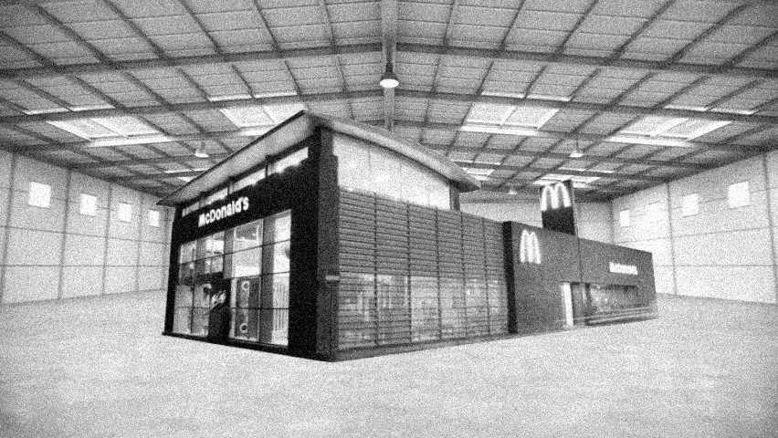

|  |
|---|
| RSE-003 located inside of its containment chamber |
RSE-003 is a medium-size restaurant previously owned and operated by the McDonald’s restaurant chain. Any person who enters through the doors of RSE-003 are displaced to RSE-003-1. No change in location will be apparent to the subject who enters - the relocation is only clear once the subject tries to exit the building. It is important to note that once a subject enters RSE-003, they are not able to exit the building under any circumstance.
RSE-003-1 is visually identical to the inside of a McDonald’s location. While not represented on the outside, RSE-003-1 is inhabited by customers who act as if they are in a typical McDonald’s location. Communication with these customers has proven unsuccessful on all occasions. There are no clear workers operating the location, when a customer approaches the counter to order their food, it manifests in their hands from no clear source.
After approximately 15 minutes of being inside of RSE-003-1, the lights will turn off and any subject located within the building will cease to exist, as well as any evidence of that subject ever existing. This includes, but is not limited to: birth certificates, registrations, yearbooks, and the memories of those associated with the subject. This does, however, disclude any experiment log conducted within RSE-003.
Location 03 was constructed and developed around RSE-003. Any road system that was previously connected to the lot that contains Location 03 has been redirected. RSE-003 is contained in a large warehouse-style containment cell, and monitored under constant surveillance. Entry is only permitted when testing is underway.